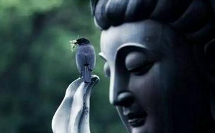

四川大地震是一场天灾，也是对人类的一次大考验，大警告，让傲慢的地球人重新开始思考人与自然的关系，人从何处来往何处去的终极关怀。长期以来“与天斗其乐无穷，与地斗其乐无穷，与人斗其乐无穷”的思想成为人们的行动指南。现在的国内许多地方据说天上飞的、地上游的、四只脚的除了凳子没吃都吃遍了。人类真是可怕啊!这次汶川8、0级的大地震，除了在地震前在距离汶川不远的绵竹市西南镇檀木村出现了大规模的蟾蜍迁徙:数十万只大小蟾蜍浩浩荡荡地在一制药厂附近的公路上行走，很多被过往车辆压死，被行人踩死，在地震的同时也出现了一些奇怪的现象。5月12日，正是农历四月初八，
在九洲体育中心开展救灾活动时，我们东林慈善功德会的工作人员与志愿者一起随机采访了几位灾民，非常巧合的是，这次地震，他们都因出去放生而逃过了一劫。
辜女士，65岁，北川县擂鼓镇人，12号这天，她与圆通寺的师父，同修们共十几人一起去放生。她跟我说那天有一件事情让她觉得非常奇怪，当天上午，她与同修十几人买了许多乌龟，鲤鱼，青蛙等动物去放生。平时那些动物，一放进河里，都是非常欢快地游走了，那天放了乌龟后，那些乌龟非常奇怪地游来游去，游出去了又游回来，总共来回三趟，当时她的心里非常的纳闷，心想，这些乌龟是不是有啥子话跟我们说？今天是不是有啥子事？回去的时候她还跟那些同修议论了这件事，那时已经一点多了，在往回走的路上，有个同修建议去市场上买点东西回家，于是大家就一起往市场方向走。到了市场门口，已经是两点多了，她突然想起不知道还有没有钱，一摸口袋，才发现钱原来都拿去买放生了，口袋一分钱也没了，于是她就跟那些同修说没钱，不去了。听她这么一说，其他同修也发现今天自己口袋里都没钱，于是大家就往回走，刚离开市场几分钟，就发
然而在去都江堰的路上，我们却看到另外一些不可思议的现象。在往都江堰的路上，道路两旁郁郁葱葱，不时可见红红绿绿点缀道路的“一鸡四吃”、“太平鱼庄”、“红鑫河鲜”等饭店的招牌，我们张眼寻找饭店的影子，映入眼帘的却是一堆堆废墟，周边的装修依昔可见震前的繁荣，生意的兴盛。废墟旁偶尔可见三五个在那收拾的人，废墟旁搭着一些帐篷。我们开玩笑说“一鸡四吃还吃吗？”“太平鱼庄不太平!”“红鑫河鲜岂能天天鲜”……据与我们随行的居士说这里不仅有许多以杀业为生的饭店，还有一些以卖身为生的“红楼”，不过现在都已被垮的一塌糊涂，往日的高楼已夷为平地，要找个踪迹还有些困难。值得奇怪的是，就在这个往日繁华的道路两边偶尔可见一些乡镇府的办公地点，完好无损。
后来我们到达了目的地都江堰玉堂镇明心寺，一个村里唯一一座完好无损的房子。据与我们随行的居士介绍，这个村子里有两百多户人家，房子都倒的差不多了。明心寺这间小破庙居然完好无损。到了明心寺，从山门上去，所看到的根本就不像是寺院，倒更像是山里的居民房，一尊佛像背靠岩石，外面用两根柱子搭了个遮风档雨的篷，就这样简单的装饰，就是这个寺院所谓的大殿。
有个比较奇怪的现象就是帮他一起从山外往寺里用锄头修路的村民家里也没什么事，房子好好的。据这位师父说这个地方在明代前就有寺院，只是文革的时候被毁，10几年前有居士在这里重建寺院，97年法愣功那一年，这座小寺院里的菩萨全被政府人员打碎，他是96年到这里来的，来了后一直在那里住着，这座寺院目前
师父出家的经历也满传奇，大概是13岁时候，有次，学校组织在村里春游
师父很平和的说着，对他而言，这种事情大概也是一种奇迹吧。憨山大师，